Photo credits
Where every picture came from.
All twenty three were generated for this demo. None is a photograph of a real job, a real person or a real company, and none shows an identifiable face, a real van, a real address or anybody's branding. Every one carries a "generated photo" label where it appears.
| Picture | What it shows | Where it is used |
|---|---|---|
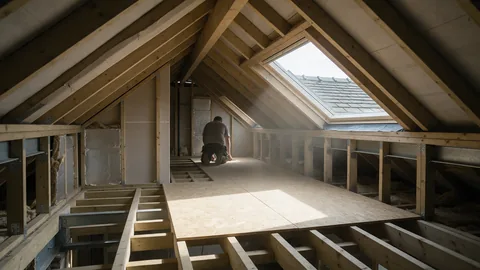 | Loft part way through, new floor in and a rooflight letting light down it | Home hero, our work, rooflight conversions |
 | The back of a stone semi with a finished flat roofed dormer | Dormer conversions, our work, dormer or rooflight article |
 | Finished loft bedroom with the roof pitch left as the ceiling | Rooflight conversions, our work |
 | The side of a thirties semi with the hip rebuilt as a gable | Hip to gable conversions, our work |
 | Small en suite shower room built under the roof slope | Loft bedrooms with en suites, our work |
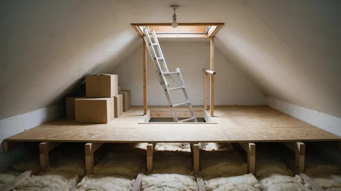 | Loft boarded out on raised legs above the insulation | Loft boarding and storage, our work |
 | New timber staircase rising into a converted loft | Staircase design for lofts, our work |
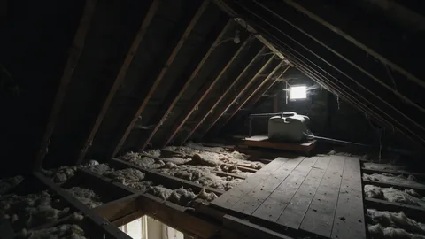 | Unconverted loft from the hatch, dark, with a tank and a bare bulb | Home page before and after slider |
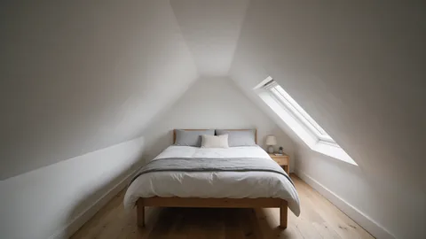 | The same loft finished as a plain bedroom | Home page before and after slider, generated from the before picture |
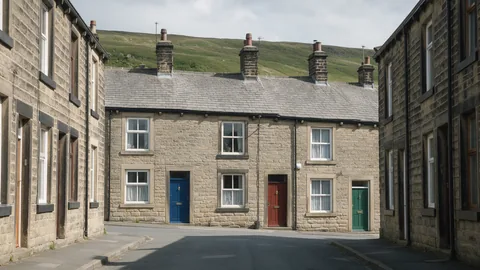 | Empty gritstone street in a Pennine town | Home page, areas index, every area page |
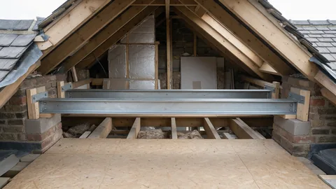 | Steel beams bedded on padstones at loft floor level | Hip to gable conversions, our work |
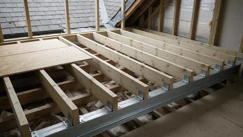 | New floor joists in steel hangers, seen from above | Our work |
 | Hands holding a tape from a joist up to the ridge timber | Is your loft high enough article, advice index |
 | Rear roof opened up, dormer framed and sheeted over | Dormer conversions, planning and regulations article, our work |
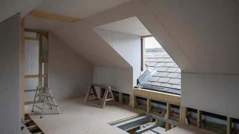 | Loft conversion at the plasterboard stage | About, dormer conversions, our work |
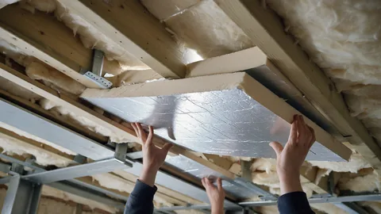 | Insulation board between and under the rafters | Rooflight conversions, our work |
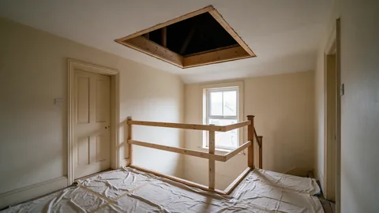 | Looking up through a new stair opening from the landing | Staircase design for lofts, our work |
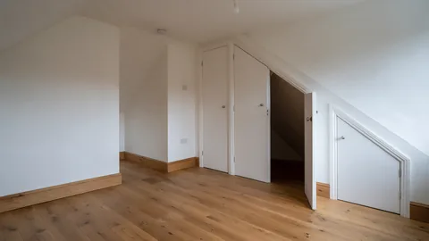 | Storage cupboards built into the low eaves of a loft room | Loft bedrooms with en suites, our work |
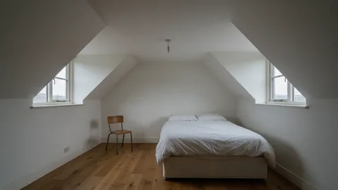 | Finished dormer loft bedroom, wide view | Our work, loft bedrooms with en suites |
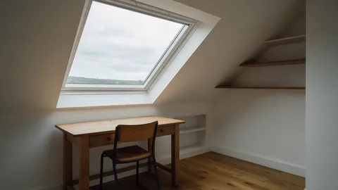 | Loft study with a desk under a rooflight | Our work |
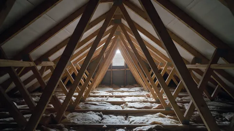 | Unconverted loft full of W shaped trussed rafters | Is my loft suitable page |
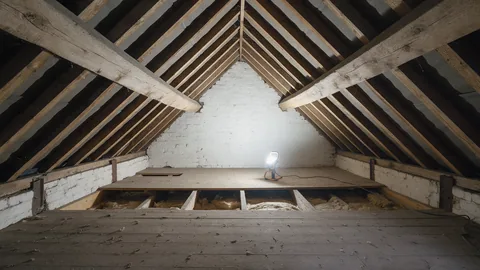 | Unconverted loft with a traditional cut roof and purlins | Is my loft suitable page |
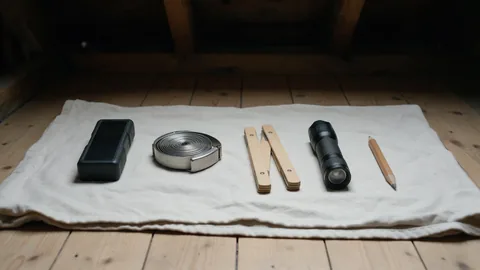 | A laser measure, a tape, a folding rule, a torch and a pencil on a dust sheet | Services page |
How they were made. Each one was written as a scene and generated as a still, then looked over at full size before it went in, and five were generated again because the first version had somebody in the frame who should not have been there. The "after" picture in the home page slider was generated from the "before" one so that the slider shows the same loft from the same spot. All of them were resized to five widths as WebP and none of the files on the site is over 200 KB.
The drawings are not pictures. Six things on this site are drawn in the browser rather than photographed: a loft under two different pitches, the same loft with a rooflight and with a dormer, a hipped end in plan against a gable, a staircase climbing each way, a trussed roof against a cut roof, and the new floor in section. They are set out from numbers in the generator rather than sketched, so each pair is a fair comparison, and none of them carries a measurement.
The numbers on this site. 01632 960613 is from the range Ofcom keeps for television and film, so it rings nobody, and the email ends in .example. The only real number anywhere here is 07460 038202, which is Clockwork's and is labelled as theirs in the bar at the top and in the footer. The placeholder in the phone box on the quote form is 07700 900123, which is from the Ofcom drama mobile range.
Want a site like this with your own photographs on it?
Call Clockwork on 07460 038202. That number is Clockwork's, not this firm's.